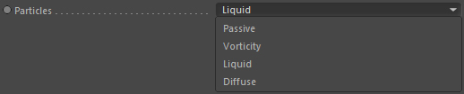

Parameters
Parameters
Particle Group

The particle group to preserve thin sheets for.
Particles

The particle type of the Particle Group to use.
Check for increasing inter-particle distance
Used by default to only create thin sheet particles if particles are really drifting apart. But for artistic purposes this can be deactivated.
Density Radius
To find particles nearby and their according densities this radius defines the maximum distance around each particle to find neighboring particles.
Calculate Anisotropic
Calculates particle anistropy.
Anisotropic threshold
A particle must have an anistropy higher than this threshold value to be included in the thin sheet calculations.
Hole Detection - Min. Density

The minimum density a particle must have in order to be included in the hole detection.
Hole Detection - Max. Density
The maximum density a particle must have in order to be included in the hole detection.
Hole Detection - Min. Distance
The minimum distance between particles that is identified as a hole.
Hole Detection - Max. Distance
The maximum distance between particles that is identified as a hole.
Hole Filling - Max. Distance
The maximum distance inserted particles can have to other particles when a hole is filled.
Collapse Max. Densitiy
The maximum particle density before particles are killed. Particles that have a lower density will be killed.
Collapse Min. Distance
The minimum distance between particles at which particles are killed.